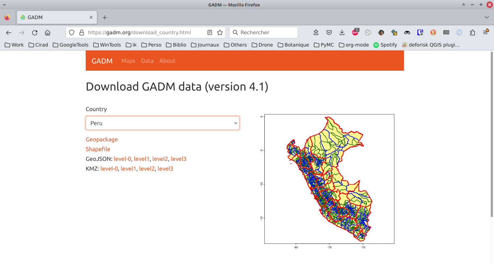
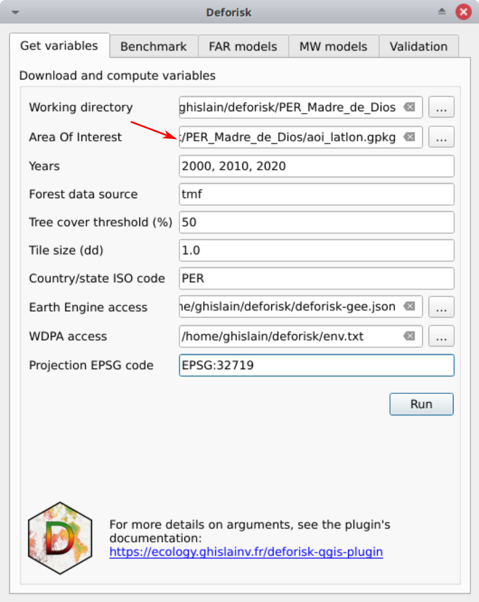

Jurisdicciones subnacionales#
Objetivo#
El objetivo es obtener un archivo GPKG llamado aoi_latlon.gpkg con dos capas llamadas aoi para la jurisdicción y subj para las subjurisdicciones. Este archivo puede luego ser utilizado con el plugin deforisk para definir el área de interés (AOI).
Creación de archivos con herramientas de QGIS#
Descargue datos del país desde GADM utilizando un archivo GPKG.
{kind=link}
Agregar todas las capas del archivo GPKG a QGIS.

Seleccione la jurisdicción usando la barra de selección (si no está visible, actívela en Ver > Barras de herramientas > Barra de selección).
{kind=link}
Guarde la característica en un nuevo archivo GPKG llamado aoi_latlon.gpkg haciendo clic derecho en la capa y seleccionando Exportar > Guardar característica seleccionada como. Marque Guardar solo características seleccionadas y llama la capa aoi (es obligatorio usar este nombre de capa).
{kind=link}
Seleccione las subjurisdicciones (para guardar varias características con la herramienta de selección, mantenga presionado el botón Ctrl).
{kind=link}
Guarde las características en el mismo archivo GPKG que anteriormente (aoi_latlon.gpkg) y llama la capa subj (también es obligatorio usar este nombre de capa).
{kind=link}
Acabamos de crear un archivo GPKG llamado aoi_latlon.gpkg con dos capas llamadas aoi para la jurisdicción y subj para las subjurisdicciones. Tenga en cuenta que puede seleccionar jurisdicción y subjurisdicciones en diferentes niveles administrativos, seleccionando características en el nivel 1, 2 o 3 en el conjunto de datos GADM.
Mirando los datos en QGIS.#
Abra el archivo Navegador. Si no es visible, actívelo en
Ver > Paneles > Navegador.Busque el archivo
aoi_latlon.gpkgen sus carpetas.Arrastre y suelte el archivo GPKG para agregar las capas
aoiysubjen la lista de capas de QGIS.
{kind=link}
Uso con el plugin deforisk#
Seleccione el archivo GPKG al definir el área de interés (AOI).
{kind=link}